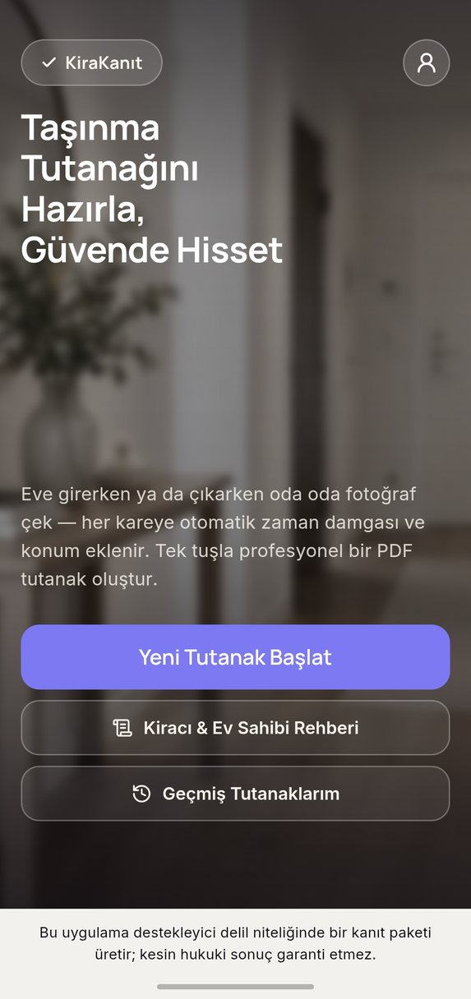
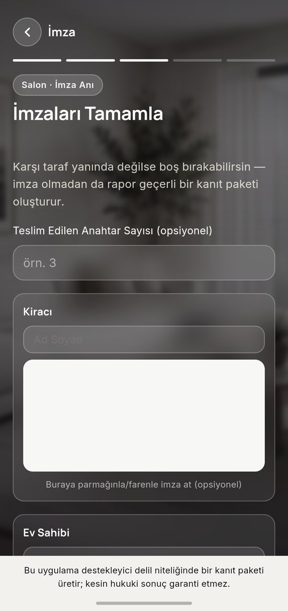
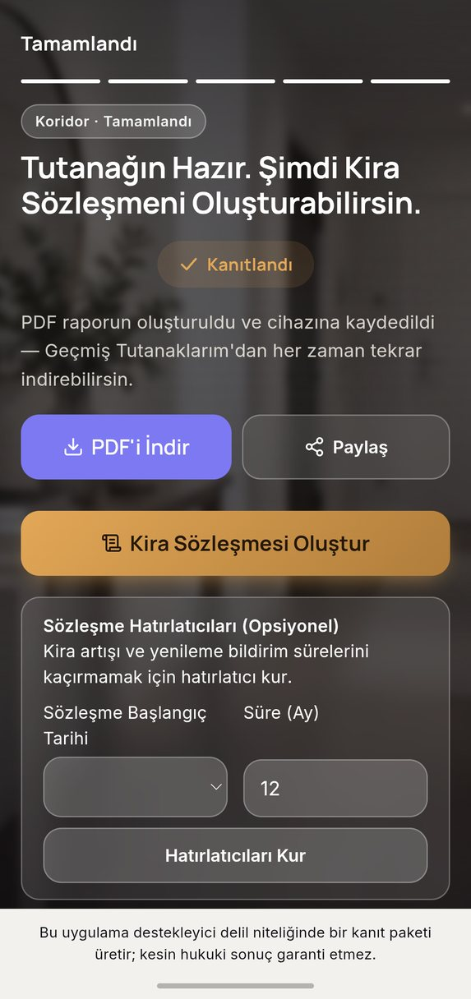

Taşınma Tutanağını Hazırla, Güvende Hisset
Eve girerken ve çıkarken evin durumunu oda oda fotoğrafla. Her kareye tarih, saat ve konum otomatik eklenir, birkaç dakikada imzalı bir PDF tutanak hazır olur. Depozito iadesinde tartışma yerine kanıt konuşur.
Android için. iPhone sürümü planlanıyor.


Üç adımda tutanak
Hukuk bilgisi ya da hazır bir form gerekmez. Uygulama seni oda oda yönlendirir.
-
1
Odaları fotoğrafla
Salon, mutfak, banyo, sayaçlar. Her fotoğrafa çekildiği tarih, saat ve konum otomatik eklenir.
-
2
Not al ve imzala
Hasarları, teslim edilen anahtar sayısını ve sayaç endekslerini yaz. Kiracı ve ev sahibi aynı ekranda imzalar.
-
3
PDF'i al, paylaş
Tutanak tek dokunuşla PDF olur. Telefonuna kaydeder, WhatsApp ya da e-postayla karşı tarafa gönderirsin.


Taşınmanın her aşaması için
Girişte kayıt al, çıkışta karşılaştır, gerekirse resmi yazıya dök.
Giriş ve çıkış karşılaştırması
Çıkışta aynı odanın giriş fotoğrafı yanında görünür, hangi hasarın sonradan oluştuğu netleşir.
QR kodla doğrulama
PDF'teki QR kod, fotoğrafların hangi oda ve tarihte kayda geçtiğini gösteren bağımsız bir doğrulama sayfası açar.
Eşya ve sayaç kaydı
Mobilyalı evler için eşya listesi, elektrik, su ve doğalgaz için abone no ve endeks alanları.
Sözleşme ve ihtarname taslağı
Türk Borçlar Kanunu'na atıflı kira sözleşmesi taslağı ve depozito iadesi için ihtarname taslağı.
Hatırlatıcılar
Kira artış dönemini, sözleşme yenileme ve fesih bildirim sürelerini kaçırma.
Geçmiş tutanaklar
Tüm tutanakların telefonunda durur, istediğin zaman yeniden PDF alırsın.
Fotoğrafların telefonunda kalır
KiraKanıt'ı hesap açmadan kullanırsın. Tutanakların ve fotoğrafların yalnızca senin cihazında saklanır.
Gizlilik politikasının tamamı- Fotoğraflar hiçbir sunucuya gönderilmezQR doğrulaması için yalnızca fotoğrafların dijital parmak izi saklanır, fotoğrafın kendisi değil.
- Yedek istersen kendi Google Drive'ınaFotoğraflar hariç tutanak bilgileri Drive'ındaki uygulamaya özel gizli bölüme yazılır. Biz bu bilgileri göremeyiz.
- Reklam ve izleme yokUygulamada reklam yok. Bu sitede de çerez ya da ziyaretçi takibi kullanılmıyor.
Sık sorulanlar
Hazırladığım tutanak hukuken geçerli mi?
Tutanak, özellikle iki tarafça imzalandığında bir anlaşmazlıkta güçlü bir destekleyici delildir. Yine de hiçbir uygulama kesin bir hukuki sonuç garanti edemez. Ciddi bir uyuşmazlıkta bir avukata danışmanı öneririz.
Ev sahibinin de uygulamayı yüklemesi gerekiyor mu?
Hayır. Tutanağı tek telefondan hazırlayıp iki tarafın imzasını aynı ekranda alabilirsin. Karşı tarafa PDF'i göndermen yeterli.
İnternet bağlantısı gerekiyor mu?
Fotoğraf çekmek ve tutanak hazırlamak için gerekmez. QR doğrulama kaydı ve isteğe bağlı Google Drive yedeği için internet bağlantısı gerekir.
iPhone'da kullanabilir miyim?
Şimdilik yalnızca Android'de. iPhone sürümü planlanıyor.
Verilerimi nasıl silerim?
Tutanakların telefonunda durduğu için uygulamadan silebilir ya da uygulamayı kaldırabilirsin. Google Drive yedeği ve diğer kayıtlar için hesap ve veri silme sayfasına bak.
Yakında Google Play'de
Yayından önce uygulamayı birlikte deneyecek kullanıcılar arıyoruz. Android telefonun varsa, telefonundaki Google hesabının e-posta adresiyle bize yaz, davet bağlantısını gönderelim.